Scientific Calculator Plus is designed and developed for everyone who needs to do calculation. Nonetheless, most of the potential users are not programmers. However, they can still enjoy the facilitating functions offered by this app.
Scientific Calculator Plus can be downloaded from Google Play, Samsung Apps and Amazon Store. User needs to log in and search “Scientific Calculator Plus”, then download the apk file to install. Note that the size of apk is not small. For example, version 1.7.x is more than 50M bytes. If the Internet connection is not fast, user may wait quite a while for the finish of downloading.
After the software is setup and started, the main panel will be shown as in the following chart.
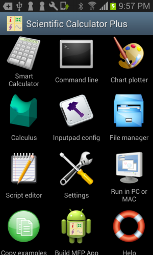
Figure 1.1: Main panel of Scientific Calculator Plus.
There are 12 modules listed in the main panel. The Smart Calculator module is specifically developed for users without any programming knowledge. This module is able to carry out all the mathematical calculations implemented in this software, plot 2D/3D/polar curves, recognize printed math expressions and record user’s all historical activities, including both input and output (i.e. calculation result or plotted chart). Note that Smart Calculator needs no input of variable variation range to draw curves. Rather, it dynamically recalculates the plotted points aligning with any adjustment of the chart triggered by user. As such the input is simple (only a math expression) and user is able to see the whole picture of the curve. However, because of the recalculation, chart adjustment sometimes is very sluggish.
Command Line is a handy tool for engineers, researchers and science & technology students. Although not a must, basic programming knowledge is a reward to users of this component. It works like Matlab, DOS window or Linux terminal, i.e. user inputs a command and presses Enter, and then output will be printed below. Each command is either a mathematical expression or an MFP function call. The called MFP function can be either a built-in or a user-defined one.
Task of Chart Plotter is to draw 2D/polar/3D graphs for math expressions. Different from Smart Calculator, user needs to specify the variation range of each parameter before plotting. This characteristic ensures all the points are determined before generation of the graph. In other words, when user zooms or shifts the chart, no point needs to recalculate so that operation is very smooth and swift and user experience is improved.
Calculus tool calculates derivative expression and values, and indefinite and definite integrals. Second and third order derivative, and double even triple definite integrals are also supported.
Inputpad Config is designed to accelerate input. Instead of typing a function name letter by letter, with this tool user can define a button for the whole function name and place the button in the input pad of Smart Calculator or Command Line. Hence, multiple key typings are replaced by a single tap.
File Manager manages user-defined MFP source codes, user-created charts and user-built MFP Apps. User can open an MFP source file to edit in Script Editor, review a generated chart or install an MFP App package by long-clicking the file icon.
Settings are a collection of app-level configs e.g. scientific notation for the output, historical record length etc.
Run in PC or MAC is a guideline to set up Scientific Calculator Plus for JAVA. Details will be listed in the following sections.
Build MFP App is used in creating an Android app from an MFP function, whether it is a software built-in function or a user defined function. The generated APK file can then be installed or published.
Help provides HTML and PDF manuals, as well as sample codes. User is allowed to copy the sample codes (.mfps files) into scripts folder to read and run.
Smart Calculator, which can be used by anyone with or without programming background, is the most important component of Scientific Calculator Plus. Its interface, which is similar to a traditional calculator, is shown in the following chart.
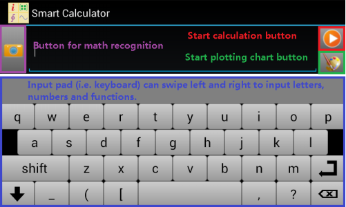
Figure 1.2: Interface of Smart Calculator.
2.1 Input
Input pad of Smart Calculator provides number & operator mode, letter mode and function mode. Letter mode includes a function dictionary so that input pad can match input characters to potential function names. User swipes input pad left and right to select one of the input modes.
If not sure about the usage of a function, user can click the help ring button (in the number and function name input mode) or the “?” button (in the letter input mode), and feed in function name, then tap the start calculation button to extract on-line help.
Figure 1.3: Obtain function’s on-line help.
If user prefers Android system keyboard rather than Smart Calculator’s input pad, or has to input some characters unavailable in the input pad, he\she simply needs to tap the system menu key (which is located under the screen in most of legacy devices with a mark like ≡, or the right of the name bar on top of the screen with a mark like ┇) and select “Enable Soft Input”, system keyboard will pop up. Then user can tap system menu key again and select “Hide Soft Input” to go back to Smart Calculator’s input pad. See Figure 1.4:

Figure 1.4: Select system keyboard or inputpad.
2.2 How to Calculate
Calculation is carried out by inputting an expression (e.g. 3 + log(4.1 / avg(1,5,-3)) or 4*x**2 + x == 3), or a group of expressions (one expression fits in one line) like
y1*3+4*y2-3*y3==7
y2/2-3*y3+y1==9
y3/3-6*y1+y2==2.4
, then tapping start button.
There are a few things user need keep in mind. First, in Scientific Calculator Plus equality is "==" while "=" is assignment. For example, to calculate x value where x + 3 is 5, user should input x + 3 == 5 instead of x + 3 = 5. But user can still assign a value to a variable, e.g. x = 7.
Second, in Scientific Calculator Plus power is "**" not "^". For example, to calculate x value where square x is 7, user should input x ** 2 == 7 instead of x ^ 2 == 7.
Third, in Smart Calculator user is able to input at most six expressions at once. Smart Calculator looks on all the expressions as an expression group to solve. The procedure is similar to solve block in MFP language. However, compared to PC, in the absence of powerful CPU and large memory, performance of Android devices limits iteration times to look up all possible solutions. In light of this, Smart Calculator only goes through the expressions once while solve block scans the expressions twice. Thus some expressions that can be handled by solve block may not be solved by Smart Calculator. For example, if user inputs
x**2 + 2*x == y
y + 1 == 2
, Smart Calculator can only get y value which is -1 but cannot obtain x since solving x needs y's result but Smart Calculator tries to solve x before y. Contrarily, if writing a script using an in-line solve block enclosing the two expressions (with the same order), and then running the script in Command Line or JAVA based Scientific Calculator Plus, user can get both x and y's values because MFP language goes back to the first expression after y is solved. Hence, when inputting expressions, user may try to place independent expressions on top before the expressions relying on other variables' values to solve.
2.3 How to Plot Graphs
User is able to input expression(s) to plot 2D, polar or 3D charts. Accepted input can be either equation, e.g. y**2 == sin(x) * x or t1 + t2 == t3, or assignment (=) with a single variable on the left side like a = b + 3. If an expression is neither equation nor assign expression, Scientific Calculator Plus will assume the value of the expression equals to another single variable. For example, if user inputs 2 * x + 5, Scientific Calculator Plus will automatically convert it to 2 * x + 5 == f_x where f_x is another single variable.
User can type at most 4 expressions in one input to plot a chart. If the total number of variables in all the expressions is 3, a 3D chart will be plotted. If the total number of variables in all the expressions is 2, and none of the variables is α, β, γ or θ, a 2D chart will be plotted. If the total number of variables in all the expressions is 2, and at least one of the variables is α, β, γ or θ, a polar chart will be plotted. For instance,
y=x+2z
z==sin(x)*y
x/abs(tan(x) + 1) == y
4==x
will be plotted as a 3D chart while
x + abs(x) - 3
4 + y == x
is a 2D chart because x + abs(x) - 3 will be automatically converted to x + abs(x) - 3 == y so that in total only two variables. And
log(r)
θ
will be plotted as a polar chart with θ value being the angle.
When a chart is shown, user may notice several operation icons in the bottom or on the right side of the chart for chart configuration, zooming in, zooming out, adjusting x, y (and z) ratio to 1:1(:1), and stretching plotted curves (surfaces) to fill the chart respectively. If user taps chart configuration (the gear icon), a dialog box will be popped up where user can adjust plotting range, set point number and enable/disable singular point detection. More than the operation buttons, user is able to use gestures, i.e. drag to move the curves and pinch to zoom the chart.

Figure 1.5: Generated chart.
Please note that the plot functionality in Smart Calculator is different from the independent Chart Plotter program. In Smart Calculator, expressions not data values are plotted. As such, if user changes plotting range by zooming or sliding the chart, Smart Calculator would automatically recalculate the expression values for the new plotting range. Comparatively, data range has been determined before chart is drawn by an independent Chart Plotter so that zooming or sliding will not change data range.
Also, if input expression is an implicit function, Smart Calculator tries to solve it first and then plot the root expression(s). If user plots a 2-variable implicit function, at most 4 root expressions will be drawn. If plot a 3-variable implicit function, Smart Calculator may calculate roots for each of the variables and then plot at most 2 roots for every variable. In other words, a single 3-variable implicit function may imply at most 6 to-be-plotted expressions. The whole solving-plotting procedure in this case will take quite long time.
2.4 How to take photo of mathematical expressions and recognize them
If with back camera, Scientific Calculator Plus on Android provides very novel functionality to recognize printed mathematical expressions by taking photo of them. This allows user to input complicated expressions quickly and easily and makes calculation straight-forward. However, note that only printed expressions are supported. Scientific Calculator Plus is not able to recognize handwritings at this moment.
Steps to recognize mathematical expressions:
1． Start Smart Calculator, then tap the camera button left of the input box;
2． After Smart Calculator shows camera preview, tap one of the bottom buttons to take photo snapshot of selected range (inside the green rectangle) of a piece of white paper or computer screen. Note that user can adjust the size and position of the green rectangle. There are two things user has to keep in mind. First is that user should try to keep the expression(s) upright and avoid any inclination. Second is that the background (area excluding the expression(s)) in the green rectangle should be in lighter colour than the expression(s), e.g. background is white and expression is black, or background is light gray and expression is dark red. Moreover, background has to be as unique as possible. Light shade is acceptable. However, distinct colour change will be looked on as a stroke of math expression(s);
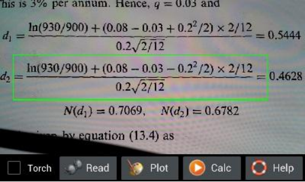
Figure 1.6: Prepare to take phone of expressions.
3． Wait until Smart Calculator finishes recognition, then the app automatically proceeds to the Smart Calculator screen and continues to process the recognized expression. If user selected to plot chart, a 2D or 3D or polar chart will be drawn. If user selected to calculate, the calculated results will be shown. User can cancel the procedure at any time if it takes too long (if a simple expression needs long time to recognize, this generally implies misrecognition). After everything is done, if the recognized result is still not satisfactory, user can send email to us. User can also edit the recognized math expressions in the input text box and redo calculation;
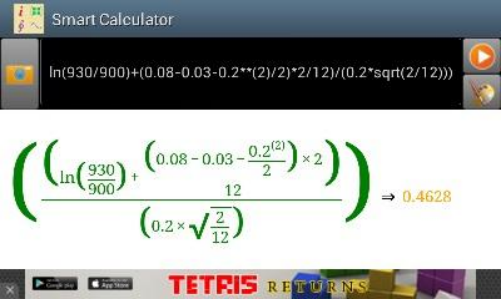
Figure 1.7: Recognizing result.
Notes and requirements when taking photos:
1. Scientific Calculator Plus endeavors to recognize printed expressions. And printed formulas have to be as clear as possible (laser printing is preferred). Handwriting currently is not supported.
2. When taking photo of white paper, ensure that you are not in a dark environment. Otherwise, Smart Calculator cannot see clearly the expressions and recognition will fail. You can turn on flash by clicking the check box in the camera preview window. However, please note that ink on the white paper may reflect the flash light and, as a result, affected strokes become disconnected.
3. When taking photo of white paper, ensure that camera is about 10-30 cm above the paper (if paper lies on the table). Too far means characters are too small to recognize while too close may lead to a very strong shade of user's mobile projected on the paper and a very poor recognition as a result.
4. Taking photo of computer screen is more difficult than white paper because computer screen is not an integral surface but an array of pixels. Furthermore, screen is refreshing and unfortunately its refreshing cycle is close to camera's time of exposure. As such user should not place the camera too close to the computer screen. If one recognition is not successful, please try several more times.
Supported math expressions include:
1. Addition;
2. Subtraction;
3. Multiplication;
4. Division;
5. Fractions;
6. Roots;
7. Multiple linear expressions;
8. Trigonometry;
9. Polynomials;
10. Exponents;
11. Algebra;
12. Integration;
13. Derivative;
14. Summation (Σ);
15. Product (Π);
16. Matrix;
17. Complex value.
The math recognition functionality is still under improvement. Users are welcome to send email to us reporting any inaccurate recognition result. We also hope users be more patient and encourage us to make it better.
2.5 Output
The output webview box of Smart Calculator shows user the calculated result or the snapshot of plotted chart (after exiting from the chart view). If the input of math expression is incomplete or incorrect, error message will be printed.
In order to accelerate inputting, user can tap any calculated results or expressions in the output box and copy their MFP strings into input box. If user taps the snapshot of a plotted chart, the full-size chart will be reloaded and shown.
One thing user has to keep in mind is that output of print, printf or any other printing functions cannot be shown in the output webview box. User has to use the Command Line tool to run scripts calling these functions.
2.6 Historical record
Historical record is a list of the activities user performs in the past. This record can be extracted by tapping menu key and selecting “History” entry. Similar to output box, user can tap any expression and copy its MFP string into input, or tap a chart snapshot to see the full-size chart.

Figure 1.8: Historical Record.
2.7 Calculation Assistant
User starts Calculation Assistant by tapping the menu key and selecting “Calc Assistant” entry in Smart Calculator. Calculation Assistant provides two tools. One is inserting a constant into input. The other is converting value from one unit to another unit. The unit conversion functionality is supported by an underlying function called convert_unit. If text in the input box is a valid real value, it is placed in the unit conversion tab as initial value to-be-converted. Otherwise, unit conversion tab does not place an initial value. If conversion is successful, user is able to select the converted value or conversion expression to insert.

Figure 1.9: Unit conversion tool provided by Calculation Assistant.
Command Line is a useful tool besides Smart Calculator. It works like Windows command box, Unix terminal or Matlab command line window. User inputs something, presses ENTER, and sees the output and returned value in the following lines. The advantage of Command Line against calculator GUI is that command line window is able to show all the print outputs while calculator GUI only shows returned value and exception.
Similar to Smart Calculator, Command Line also provides its input pad. User swipes the input pad left and right to input numbers, letters or function names and key words. A function name dictionary is activated when inputting letters so that user is able to quickly input the whole function name by just typing the first few characters and selecting the right name from name candidate list. Input pad of Command Line includes both start button and ENTER button (the button in the purple rectangle in the following chart). Pressing start button triggers execution of current command or command batch. Pressing ENTER button does not run a command or command batch but finishes the input line of scanf or input function, or starts a new line when inputting a multi-line command batch. Here a multi-line command batch means the command includes several lines each of which can be any independent command statement except function and endf. These commands run as a batch.
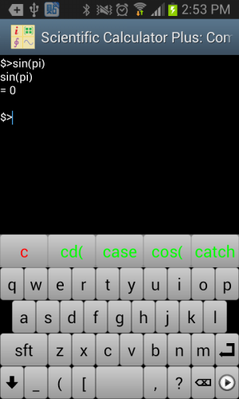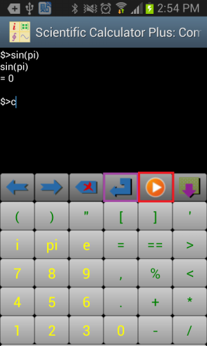
Figure 1.10: Input and output of Command Line.
Some users have special requirements to input historical records swiftly and high-frequently. To this end, Command Line includes a history record input pad. All of user’s inputs and calculation results are listed. The red column is the executed command; the green column is the output result; and blue one is user’s input for input function. The max number of records shown in this input pad is determined by App settings. By default, it is 20 records.

Figure 1.11: Quickly input historical records using historical record input pad.
It is quite possible that user needs to input some special characters or Unicode char not included in the input pad. If so, user can tap Android menu key and select “Show system soft keyboard” menu to activate system soft keyboard. If user wants to go back, simply tap Android menu key again and select “Hide system soft keyboard”. Then next time when user inputs, input pad will be popped up.
GUI based Scientific Calculator Plus for JAVA is also a command line tool and supports multiple lines in one command batch. User can input more than one lines in one command batch using copy and paste, or type Shift-ENTER to start a new line in current command batch. Different from the Command Line tool in Android, typing ENTER in Scientific Calculator Plus for JAVA triggers the execution of current command or command batch.
Command Line supports global variables. However, different from Matlab, user needs to declare global variables before using them. For example, user can type the following command: Variable a, b, c , then assign values to the declared variables (i.e. input commands like a = "hello world", b = 4 and c = 5 + 3.7i), and then use a, b, c in other commands like print(a) or exp(c).
Like Matlab, there is also a pre-defined global variable “ans” which stores last result except if last command returns nothing. However, different from Matlab, assign statement in MFP programming language also has a return value which is the assigned value. For instance, statement c = 5 + 7.3i returns 5 + 7.3i. In this way, if user types c = 5 + 7.3i in Command Line, 5 + 7.3i will be assigned to “ans” variable.
Like Smart Calculator, user is able to access Calculation Assisant by tapping Android menu key and selecting “Calc Assistant” entry. User can insert a constant value or convert value from one unit to another unit with the help of this assistant. The initial value to-be-converted in units conversion tab is copied from last command's result if it is a valid real value. If not, initial value is copied from user's type-in for current command if it is a valid real value. Otherwise, unit conversion tab does not show an initial value.
The Smart Calculator tool in Scientific Calculator Plus has been able to plot graphs. However, all the graphs plotted by Smart Calculator are based on independent mathematical equations. If user needs to draw some complicated charts in selected ranges, the independent Chart Plotter is the right choice.
The independent Chart Plotter can plot 2D, polar and 3D charts. The ways to draw different types of charts are quite similar. For example, in order to draw a 2D chart, firstly user is required to set chart name (i.e. chart file’s name), chart title, x and y axis titles, and show grid or not. Then user needs to tap the “Add curve” button one or several times to add (at most 8) curves to draw.
In order to define a curve, user has to input curve’s title, colour, shape of sample points and pattern of connection lines between sample points. All these configs are intuitive. The difficult part is what is t and how to config X(t) and Y(t).
It is well known that any non-branched 2D curve can be looked on as the track of a moving point. The projection of the track on x axis is the point’s x-coordinate function of t, i.e. X(t). Similarly, the projection of the track on y axis is the point’s y-coordinate function of t, i.e. Y(t).
Scientific Calculator Plus chooses this way to define a curve because sometimes an x value can be mapped to several points in a 2D curve (same as some y values). For example, a circle in a traditional 2D (not polar) coordinate cannot be drawn from single equation in Smart Calculator. However, using the independent chart plotter, two functions of t can be selected to define x and y. If the radius of the circle is 2.5, the center of the circle is (1.3, -1.7), then X(t) is 2.5*cos(t)-1.3 and Y(t) is 2.5*sin(t)+1.7, t changes from 0 to 2*pi. In this way, this circle is accurately defined and can be drawn by the chart plotter.
The above solution is able to draw simple curves as well as complicated graphs. The approach is letting X(t) equal t, then Y(t) becomes the to-be-drawn function, not of x but of t. For example, user could set X(t) to be t and Y(t) to be t**2 and let t change from –t to 5. Then a parabolic curve y == x**2 where x is from –5 to 5 is drawn.
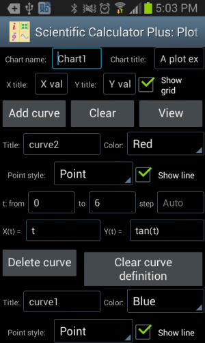
Figure 1.12: Using the independent Chart Plotter to draw 2D chart.
The follows are examples to draw different types of 2D curves using the independent Chart Plotter. For example, to draw a line segment from (3, 5) to (3, 15), user could set t from 5 to 15, set step Auto, X(t) is 3 and Y(t) is t.
If a curve includes singular points, i.e. y = tan(x), user could set t from -2*pi to 2*pi, set step Auto, X(t) is t and Y(t) is tan(t). The plotted curve is shown as the left part in the following chart.
However, if the step of t is not Auto, i.e. user sets a step value, e.g. 0.1, Scientific Calculator Plus will not automatically detect singular points. As such the plotted curve is shown as the right part in the following chart.
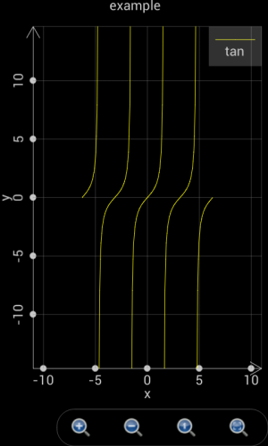
Figure 1.13: Scientific Calculator Plus is able to detect singular points only if the step is set Auto.
It is quite similar to draw polar charts as to plot 2D graphs. The only thing to keep in mind is that in a polar chart X(t) and Y(t) are replaced by r(t) and θ(t), where r is the radius and θ is the angle.
For example, if t changes from 0 to 2*pi, step is Auto, r(t) is cos(t) and θ(t) is t, a circle is plotted as the green curve shown in the following chart.
If t changes from -2*pi to 2*pi, step is Auto, r(t) is 2*sin(4*t) and θ(t) is t, a chamomile is drawn as the blue curve shown in the following chart.
If t changes from -1.5*pi to 1.5*pi, step is Auto, r(t) is t and θ(t) is t, a heart shape is plotted as the magenta curve shown in the following chart.
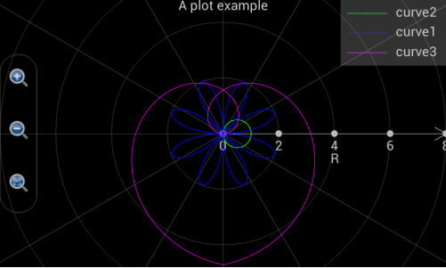
Figure 1.14: Draw various curves in a polar coordinate system.
Plotting a 3D graph is a bit more complicated. As shown in the following chart, user is required to input more settings. It is quite straight-forward to set up graph name, title, x, y and z axis title etc. In the curve settings, “Is grid?” means Scientific Calculator Plus will only draw grid, i.e. skeleton, of the curve without filling it. Max value and colours means, when Z value is no less than the max value, the colours on the front and back sides of the surface. Min value and colours means, when Z value is no greater than the max value, the colours on the front and back sides of the surface. If Z value is between max and min, the colour is a transition between max colour and min colour.
Different from a 2D chart, X, Y and Z are functions of internal variables u and v, not t. Scientific Calculator Plus introduces two internal variables instead of one because it is drawing a 3D surface instead of a 2D curve.
By setting X(u,v), Y(u,v) and Z(u,v), user is able to draw very interesting 3D surfaces. To plot 3D curve instead of 3D surface, user can set X, Y and Z functions of u only, i.e. the change of X, Y and Z are irrelevant to the dynamics of v.

Figure 1.15: Draw 3D chart using the independent Chart Plotter.
The following examples demonstrate how to plot 3D charts. If user wants to draw a flat surface at x = 10 and in parallel with y and z, u can change from 0 to 10 with auto step, v is also from 0 to 10 with auto step, x is 10, y is v and z is u. The plotted flat surface is shown as the following figure.

Figure 1.16: A flat surface at x = 10.
User may need to draw a line segment from one point to another point in a 3D coordinate system, e.g. from (x,y,z)=(1,5,6)to (x,y,z)=(10,3,9). In this case, u is set from 1 to 10, step is auto. Since x, y and z are irrelevant to v, v can be arbitrarily configed. However, user may keep in mind that the number of calculations equals u’s number of steps times v’s number of steps. It is important to keep the number of calculations minimum to accelerate the plotting. Therefore, if x, y and z are irrelevant to v, v can change from 0 to 1 with a step of 1 so that v’s number of steps is only 1. Then x is configured as u, y is (u-1)/(10-1)*(3-5)+5 and z is (u-1)/(10-1)*(9-6)+6 so that x and y and x and z are linearly correlated. Another thing user has to keep in mind is that the “Is grid?” check box must be selected. Otherwise, the line segment will be gray colored.
The plotted line segment is shown in the following chart.

Figure 1.17: Draw line segment in a 3D coordinate system.
Please note that, before version 1.6.7, Scientific Calculator Plus shows x, y and z axes by default. If the axes are not wanted, user can tap the gear button and select “Not show axes and title” check box. This action will hide the axes as well as the title of the chart. Since version 1.6.7, Scientific Calculator Plus automatically hides the axes after the graph is plotted. If user wants to see the axes, s\he has to tap the gear button and uncheck the “not show axis” box. Similarly, user can hide and show title.
 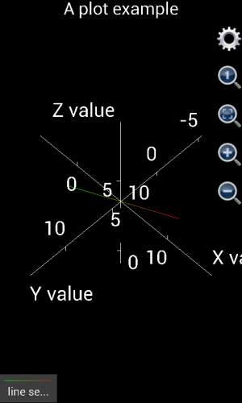
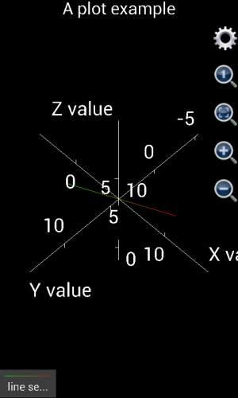
Figure 1.18: Show and hide axes and title in a 3D chart.
In order to draw more complicated shapes, e.g. sphere, user may look on u as the degree of longitude on the ball surface, and v as the degree of latitude. Then x can be set as 3*cos(v)*cos(u) where 3 is the radius of the ball, y is 3*cos(v)*sin(u), z is 3*sin(v), u is from 0 to 2*pi with auto step, v is from –pi/2 to pi/2 with auto step.
If using version 1.6.6 or earlier, the plotted graph is shown as the left part of the following chart. It is not a ball but an ellipsoid. The reason is that x, y and z axes have different unit lengths. User has to tap the “adjust to 1:1:1” button (in the red circle) to see the right shape. However, from version 1.6.7, x, y and z axes have been automatically adjusted to 1:1:1 when the graph is plotted. Therefore the plotted chart would be similar to the right part of the following figure.
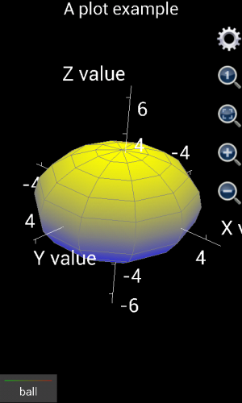
Figure 1.19: Draw a ball in a 3D coordinate system.
If user wants to draw a ball similar to earth, i.e. Arctic and Antarctic poles are white but close to equator it is green, two hemispheres (curves) have to be drawn. The first curve is the northern hemisphere. The “Is grid?” box should be unchecked. Max value and colours should be Auto, White and White (White means ice cap in Arctic) respectively. Min value and colours should be Auto, Green and Green (Green means the forests in the area around equator) respectively. X is 3*cos(v)*cos(u) where 3 is the radius. Y is 3*cos(v)*sin(u) and z is 3*sin(v). Here u is from 0 to 2*pi with auto step, and v is from 0 to pi/2 with auto step.
The second hemisphere is southern hemisphere. Similar to northern hemisphere, “Is grid?” box should be unchecked. Min value and colours should be Auto, White and White respectively, max value and colours should be Auto, Green and Green respectively. X is 3*cos(v)*cos(u) where 3 is the radius. Y is 3*cos(v)*sin(u) and z is 3*sin(v). Here u is from 0 to 2*pi with auto step, and v is from –pi/2 to 0 with auto step.
The plotted chart is shown below:

Figure 1.20: Draw a ball similar to earth.
Though, the approach is a bit different from drawing a ball, Chart Plotter is able to draw a cylinder. A ball has only one surface while a cylinder has three. For example, the cylinder to draw has a radius of 5, its bottom surface’s elevation is 0, and its height is 20. Since the bottom surface is a solid circle, let u be the angle ranging from 0 to 2 with a step length equal to 0.05 (this means angle changes from 0 to 2*pi and a changing step is 0.05*pi), and let v be the radius ranging from 0 to 5 with a step length equal to 5. Then x should be v*cos(u*pi), y should be v*sin(u*pi), z is the altitude so that it is always 0. Max value and colours are auto, red and red respectively, same as min value and colours because the thickness of the surface is 0.
Drawing the top surface of the cylinder is almost the same as the bottom one. Let u be the angle ranging from 0 to 2 with a 0.05 step length. Let v be the radius which is from 0 to 5 with a step equal to 5. Again, z is the altitude whose value is always 20. Max value and colours are auto, blue and blue respectively, same as min value and colour.
In order to draw the side surface, let u still be and angle changing from 0 to 2 with a step being 0.05. Now v is the altitude of each point on the side surface. Since the height of the cylinder is 20, v varies from 0 to 20 and step length is 20. Since the radius of any point on the side surface is always 5, x is 5*cos(u*pi) and y is 5*sin(u*pi). Once again, z is the altitude so that it always equals v. Since the upper surface is blue and lower surface is red, the max value and colour of side surface should be auto, blue and blue respectively, and the min value and colour should be auto, red and red respectively. The graph is shown as follows.
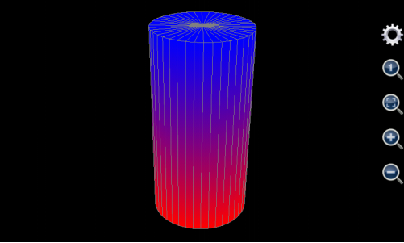
Figure 1.21: Draw a cylinder.
User can also draw cone(s) using this tool. A cone has two surfaces, i.e. bottom surface and side surface. The bottom one is drawn in the same way as a cylinder whereas the radius of point on the side surface is not constant but monotone decreasing with the point’s altitude.
If, for example, the maximum radius (which should be at the bottom) of the cone to draw is 5, altitude of the bottom is 0, its height is 20. Its bottom surface is the same as the bottom surface of the cylinder in Figure 1.20: . For each point on its side surface, u is its angle varying from 0 to 2 with a constant step equal to 0.05 (this means the angle’s variation range is from 0 to 2*pi and variation step length is 0.05*pi). V is the altitude of each point on the side surface. Its variation range is from 0 to 20 and step length is 20. Because radius of point on the side surface monotonically decreases with height, the radius should equal 5*(20-v)/20. As such, x is 5*(20-v)/20*cos(u*pi), y is 5*(20-v)/20*sin(u*pi), and z is v. The maximum value and colours of the side surface is auto, blue and blue respectively. The minimum value and colours of the side surface is auto, red and red respectively so that they match the colour of the bottom surface. The plotted chart is shown as below.

Figure 1.22: Draw a cone.
This tool can also draw many funny and interesting shapes. For instance, if u’s range is from 0 to 2*pi, v is from 0 to 10, x is v*cos(u), y is v*sin(u), and z is 6*cos(v)*exp(-v/10), the graph it generates would be like follows.

Figure 1.23: Draw a flower like graph.
Another example is using 3D Chart Plotter to draw a spiral line. To this end, user may set v from 0 to 10 with a step length 0.1. X is v*cos(v), y is v*sin(v), and z is v. U can be any value. However, as explained above, to ensure minimum calculation time, u should be from 0 to 1 with a step length equal to 1. And the “Is grid?” box must be checked otherwise the 3D line can only have a gray colour.
The plotted graph is shown as below:

Figure 1.24: Draw a 3D Spiral line.
In the end of this section, a more complicated 3D graph example is demonstrated. This example shows user step by step how to draw the Oriental Pearl Radio & TV Tower in Shanghai. The photo of this building is shown below:
Figure 1.25: Photo of the Oriental Pearl Radio & TV Tower in Shanghai, P.R.C.
In order to draw the TV Tower, first of all user needs to find out what the building is comprised of.
The bottom of the building includes three leaning pillars to support the whole building. To draw them, the title can be empty, minimum colour is red and maximum colour is yellow, minimum and maximum values are auto (i.e. user does not input). Assume the radius of each pillar is 3, angle of inclination is 45°, and height is 20. The central points of the three pillars’ bottom surfaces are the vertexes of a regular triangle. Their coordinates are (-20*sqrt(3)/2,-10,0), (0,20,0) and (20*sqrt(3)/2,-10,0) respectively. Let u be the angle, v be the radius, u varies from 0 to 8 which means that angle ranges from 0 to 8*pi, and u’s step length is 0.25 (i.e. 1/4*pi). V’s range is from 0 to 20 and step is 20. As such, x’s expression is iff(u<=2,3*cos(u*pi)-(20-v)*sqrt(3)/2,and(u>=3,u<=5), 3*cos(u*pi), u>=6, 3*cos(u*pi)+(20-v)*sqrt(3)/2, Nan), y’s expression is iff(u<=2,3*sin(u*pi)+(20-v)/2,and(u>=3,u<=5), 3*sin(u*pi)-(20-v)*sqrt(3)/2, u>=6, 3*sin(u*pi)+(20-v)/2, Nan). And z’s expression is v.
User needs to keep in mind that the above x, y and z expressions draw three surfaces together. So question is, why use one instead of three groups of x, y and z to draw the three surfaces? Answer is, the number of surfaces in the Oriental Pearl TV Tower is more than 8, while user can input at most 8 groups of expressions in the 3D Chart Plotter. Thus at least one group of expressions need to draw more than one surfaces.
In order to draw multiple surfaces by one group of x, y and z expressions, iff (i.e. if function) must be employed to determine the condition to draw each surface. For the three supporting pillars, u’s range is from 0 to 8 which means the angle varies from 0 to 8*pi. Since a supporting pillar’s angle variation range only covers from 0 to 2*pi, by using iff function the first pillar is drawn when u is from 0 to 2 (which means angle ranges from 0 to 2*pi), the second pillar is drawn when u is from 3 to 5 (which means angle ranges from 3*pi to 5*pi), and the last one is drawn when u is from 6 to 8 (which means angle ranges from 6*pi to 8*pi). In this way, the x, y and z expressions differs at different u ranges. When u is between 2 and 3 or between 5 and 6, x, y and z are all Nan.
So another question is, why do we need the gaps between 2 and 3 and between 5 and 6 in u’s variation range. In other words, why not set u to change from 0 to 6 so that range from 0 to 2 is for the first pillar, range from 2 to 4 is for the second one and range from 4 to 6 is for the last pillar?
The answer is, although using iff function can draw different surface at different u range, the surfaces still connect to each other if no gap between them. By introducing the range gaps and setting point value to be Nan in the gaps, we disconnect the three pillar surfaces because Nan point cannot be drawn.
The (20-v)*sqrt(3)/2 and (20-v)/2 parts in x and y’s expressions realize the inclination of the pillars. They imply that the x and y coordinates of the three pillar drift with increment of z.
Notice that between the three leaning pillars an erect column stand connecting the ground and upper part of the TV tower. To draw it, user may set its title blank, uncheck the “is grid?”box, and set the minimum colour green, maximum colour yellow, and the minimum and maximum values both auto. U value ranges from -1 to 1 with a step length equal to 0.25, and v value ranges from 0 to 20 with a step length equal to 20. Assume the radius of the erect column is 2, then x is cos(u*pi)*2, y is sin(u*pi)*2, and z is the altitude which always equals v.
Above the columns of the TV tower user see a big ball. Its title is blank. The “is grid?” box is unchecked. The minimum colour is cyan and minimum value is auto. The maximum colour is red and maximum colour is auto. Assume the radius of the ball is 10. And the center of sphere is (0,0,20). U changes from –pi to pi with a step length of pi/10. V varies from –pi/2 to pi/2 with a step length of pi/10. The expression of x is 10*cos(u)*cos(v). The expression of y is 10*sin(u)*cos(v). The expression of z is 10*sin(v)+20.
Above the sphere we see three erect columns. Once again, a single group of x, y and z expressions is applied to draw the three columns in one breath. The title of the columns is blank. “Is grid?” box is unchecked. Max value and colour are auto and blue respectively. Min value and colour are auto and green. Assume the radius of each column is 1.5. X and y coordinates of center of each column are (-2,2/sqrt(3)), (0,4/sqrt(3)) and (2,2/sqrt(3)) respectively. Let u be the angle and v be the radius. Using the same approach as drawing the three leaning pillars, user sets u from 0 to 8 (i.e. angle changes from 0 to 8*pi) with a step length of 0.25. V ranges from 20 to 70 with a step length of 50. Therefore, expression of x is iff(u<=2,1.5*cos(u*pi)-2,and(u>=3,u<=5), 1.5*cos(u*pi), u>=6, 1.5*cos(u*pi)+2, Nan), expression of y is iff(u<=2,1.5*sin(u*pi)+2/sqrt(3),and(u>=3,u<=5), 1.5*sin(u*pi)- 4/sqrt(3), u>=6, 1.5*sin(u*pi)+2/sqrt(3), Nan), and z is v.
A small ball stands above the three erect columns. Its title is empty. “Is grid?” is unchecked. Minimum colour and value are auto and magenta respectively. Maximum colour and value are auto and white respectively. The center of sphere is (0,0,70) and ball’s radius is 6. U is from –pi to pi and its step length is pi/10. V is from –pi/2 to pi/2 and its step length is also pi/10. X’s expression is 6*cos(u)*cos(v), y’s expression is 6*sin(u)*cos(v) and z’s expression is 6*sin(v)+70.
User sees a smaller erect cylinder above the small ball. Its title is empty. It is not drawn as a grid. Minimum value and colour are auto and yellow respective. Maximum value and colour are auto and green respective. Assume height of the cylinder is 15. X and y coordinates of the cylinder’s center points are (0,0). The radius is 1.5. Let u be the angle and v be the radius. U varies from 0 to 2 (i.e. the angle changes from 0 to 2*pi) and its step length is 0.25. V changes from 70 to 85 with a step of 15. X’s expression in this way is cos(u*pi)*1.5 and y is sin(u*pi)*1.5. Z is still v.
A tiny ball sits just on top of the erect cylinder. Like other components, its title is empty and it is not a grid. Minimum value and colour are auto and red respectively. Maximum value and colour are auto and cyan respectively. The center of sphere is at (0,0,85). Radius is 2. U is from –pi to pi and step of u is pi/10. V is from –pi/2 to pi/2 and its step is pi/10. Then x is 2*cos(u)*cos(v), y is 2*sin(u)*cos(v) and z is 2*sin(v) + 85.
The last component to draw is the antenna. Its title is empty and it is not a grid. Its minimum value and colour are auto and red respectively. Maximum value and colour are auto and light gray (ltgray) respectively. The radius at the bottom of the antenna is 0.5. The height of the antenna is 30. The center of the bottom surface is (0,0,85). Let u be the angle and change from –pi to pi with a step of pi/5. Let v be the altitude and change from 85 to 115 with a step of 10. Assume the radius of antenna at any height cannot be smaller than 0.2 times its maximum radius (i.e. the radius at its bottom which equals 0.5). Then x’s expression is 0.5*max(0.2,(115-v)/30)*cos(u*pi), y’s expression is 0.5*max(0.2,(115-v)/30)*sin(u*pi) and z is v.
The above settings are very complicated and almost unfeasible to manually input into a mobile device. Fortunately, since version 1.6.7, Scientific Calculator Plus provides a short-cut to input all the above expressions. After starting 3D Chart Plotter, user simply needs to tap Android menu button and select “fill example”, then all the entries are automatically filled in. Then user taps the “View” button to see the chart. Since the TV tower is a very complicated graph, it may take several minute to draw, depending on the hardware performance.
If user is using Scientific Calculator Plus version 1.6.6 or earlier, the plotted graph is shown as the left part of the following chart. Clearly, x, y and z are not in the right ratio. User has to tap the “adjust ratio to 1:1:1” icon (circled in red). Then user may tap the gear icon (circled in green) to hide axes and title. The adjusted graph is demonstrated as the right part of the chart below.
If user is using Scientific Calculator Plus version 1.6.7 or newer, the x, y and z ratio is automatically adjusted to 1:1:1 and chart title and axes are automatically hidden on the spot. As such the graph is the same as the right part of below and is very similar to the photo of Shanghai Oriental Pearl TV tower.
 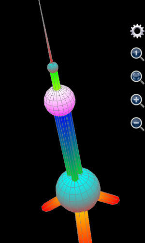
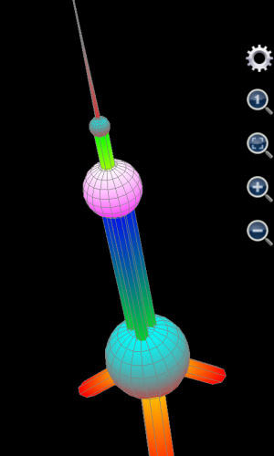
Figure 1.26: Draw Shanghai Oriental Pearl TV Tower.
Nevertheless, typing complicated expressions in a mobile device is never an easy job. So running an MFP script to call plot3d or plot_3d_surface function is the best alternative. If user knows how to program MFP language and how to use plot3d and plot_3d_surface, a simple MFP function can be implemented in a text file and saved into the mobile device. Then by simply typing the user-defined MFP function name in the Command Line tool (only several letters to input), user will be able to draw the TV tower. Detailed script has been provided in Chapter 5 in this manual.
Scientific Calculator Plus has a very easy-to-use Derivative Calculator tool. It is able to calculate first, second and third derivative expression and value. If user does not input variable value, the Derivative Calculator gives out derivative expression. Otherwise, derivative value is provided. This tool is simply a wrapper of derivative (to calculate derivative expression) and deri_ridders (to calculate derivative value) functions.
The built-in Integral Calculator tool in Scientific Calculator Plus supports both indefinite integral and up to triple definite integral. When calculating definite integrals, the starting and ending values can be real number, complex number or even positive or negative infinite. The number of steps in the calculation must be a non-negative integer. If the number of steps is 0, or the integral’s starting and/or ending value is infinite, Gauss-Kronrod method is employed. Otherwise, Riemann Sum method is selected. Gauss-Kronrod method is much more accurate than Riemann Sum and can handle some singular points, but it is much slower so that it is not recommended for a double or triple integral.
In essence, Integral Calculator is the graphic interface of the integrate function provided by MFP programming language. For example, if the integrated expression is x+3, and the integrated variable name is x, Integral Calculator actually calls Integrate(“x+3”, “x”) and gets the result of “3*x+0.5*x**2”, which means the result expression is 3 times x plus half of x square. Another example is calculating definite integration of exp(x) from –infinite to 0. User simply inputs exp(x) as the integrated expression, x as the integrated variable, starting value is –inf and ending value is 0. The number of calculation steps can be any non-negative integer because Gauss-Kronrod method is used anyway. And the final result is 1.
User is able to define several inputpads and use the inputpads to rapidly input functions in calculator. Each inputpad has its own portrait mode and landscape mode for portrait and landscape orientation respectively. User is also able to add or delete an inputpad from menu.
Each inputpad has a name which is used internally by calculator and must be unique. There are also long name, wrapped name (lines 1 and 2) and short name. These name are for backward and forward compatibility and are not used at this moment. If user unticks “Visible” check box, the inputpad will be hidden.
Each inputpad is a table includes a number of columns (the number of columns may be different in portrait mode from in landscape mode). Each input key is a cell in the inputpad table. Each key has a shown name (which will be shown in the key button) and an input name (which will be input to calculator). User can edit an input key by tapping it or cut/copy/paste/delete an input key by long-clicking it and selecting a context menu. The last button in each table is not an input key. Its role is adding a number of buttons to the tail of the input key list.
The inputpad config file is stored in mobile device's SD card/AnMath/config folder with the name of inputpad.cfg (for Smart Calculator) or inputpad_cl.cfg (for Command Line). If this file does not exist, Scientific Calculator Plus loads default inputpads. Thus, user may manually delete this file to revert back to the default inputpads provided by Scientific Calculator Plus.
Scientific Calculator Plus stores user's data files in an external storage, e.g. SD card. When Scientific Calculator Plus starts, it checks if its data folder is available. If not, it tries to create its folder in the first external storage device. If unsuccessful, an error message will be prompted. The path of the folder can be seen in the settings view.
User can view and manage data files using an internal file management tool. In File Manager, user is able to select a file or folder by tapping its icon. If a file or folder is selected, its background colour turns to orange. User can run/open (depends on the file type) a file or folder by long-clicking its icon or selecting the item first then clicking “run” or “open” menu. User can also delete or rename a selected file or folder using “delete” or “rename” menu.
User can open a program source file to view or edit it. Scientific Calculator Plus has an internal editor with basic editing capability. User can open a chart file and view the chart. In order to study the format of a chart file, user may copy the chart file to PC and open the chart file by a text editor to see what is inside.
Scientific Calculator Plus has the following Settings:
1. Bits of precision. This setting determines how many effective bits after decimal point should be shown. For example, if it is 4, 0.003204876 will be rounded to 0.003205. Note that this setting is also applied to the Command Line tool.
2. Scientific notation. This field sets the value range that scientific notation, e.g. 2.1e-37, should be used to demonstrate result. Note that this setting is also applied to Command Line.
3. Record length. The record length gives out the number of historical calculations recorded by Smart Calculator. Note that this setting is also applied to Command Line. But Command Line does not share its records with Smart Calculator.
4. Variable range to plot charts. In Smart Calculator, if user wants to plot chart for expression(s), initial variable range is set here. By default, it is from -5 to 5.
5. Auto start program. The auto start program is the component which is automatically launched when user starts this app. By default, no component is automatically loaded so that user sees the main panel.
6. Vibrate when press calculator button. Check this item if user wants the mobile device to vibrate when pressing a calculator button.
7. Do not hide input pad when running a command in command line. By default, this feature is disabled so that each time when user runs a command, input pad is hidden to maximize output visible area. Then after the command finishes, user has to tap the screen to show input pad again. Check this item if user wants to run commands high-frequently and avoid the time cost to activate input pad after a command finishes.
8. Folders' paths. User is able to select which storage is used for the application data folder. There are also several read-only settings for folders' paths. First one is app data folder, second is script folder, third is chart folder, fourth is apk file folder and last is signature file folder. These settings will be editable in the future.
Scientific Calculator Plus supports both Android mobile devices and desktop computers. From version 1.1, Scientific Calculator Plus for Android includes a JAVA/Swing based Scientific Calculator Plus. Any computer, whether running Windows, MacOSX or Linux, can run this calculator if JAVA 6 or above version is installed. From version 1.7.1, a system console based Scientific Calculator Plus for JAVA is added. This is a pure MFP scripting language interpreter. With this tool, an mfps script can run from a Dos box or a Linux terminal like Python or Perl. User can start the “Run in PC or Mac” tool to copy the two Scientific Calculator Plus for JAVA tools into the AnMath fold in SD card.
Each time user upgrades Scientific Calculator Plus in an Android device, Scientific Calculator Plus for JAVA is automatically copied to SD card. As such, normally there is no need to launch the “Run in PC or Mac” tool. However, sometimes Scientific Calculator Plus for JAVA may not be properly copied, or it is deleted by user carelessly. The “Run in PC or Mac” tool becomes useful in these scenarios.
The “Run in PC or Mac” tool includes two steps. The first step only copies Scientific Calculator Plus for JAVA into the SD card. The second step asks user to confirm. After the two steps finish, user needs a USB cord to connect Android device to a PC with JAVA installed, as shown in the following chart:

Figure 1.27: Connect an Android device to a PC with JAVA installed using a USB cable.
After connected to a PC, SD card of some Android devices can be automatically founded by computer while other Android devices only prompt user about to exchange files with PC. In the second situation user needs to tap to confirm, then computer is able to locate SD card in the Android device, as shown in the following chart:
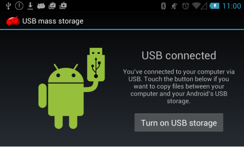
Figure 1.28: Some Android devices ask user to confirm turning on USB storage and allowing computer to find Android’s SD card after connected to computer.

Figure 1.29: Computer finds Android’s SD card.
If the above steps are successfully done, user will see the mapped partition(s) of Android SD card(s) in My Computer, as shown in the above picture.
Please note that some Android devices have more than one SD cards. First of them is the built-in (internal) storage, and others are extended (external) storage(s). By default, Scientific Calculator Plus for JAVA is copied to the first SD card, i.e. the built-in storage. However, user is able to change the target SD card in settings view. In the above example, name of first USB storage (SD card) is Phone. User can find the AnMath folder in this SD card, and then run JMathCmd.jar or mfplang to start Scientific Calculator Plus for JAVA. User is able to write and test MFP scripts in PC using JAVA based Scientific Calculator Plus, and run the tested MFP programs in the Android device later on if the program files are properly copied into the AnMath\scripts folder. The whole procedure is illustrated in the following chart.

Figure 1.30: User finds JMathCmd.jar, JMFPLang.jar, mfplang.cmd, mfplang.sh and scripts folder in the AnMath directory in the SD card of the Android device.
Some Android devices, e.g. Samsung Galaxy Express, do not allow user to run any executable files from SD card after they are connected to computer. Solution is copying the whole AnMath folder from SD card to a folder physically located in computer, and then running Scientific Calculator Plus for JAVA there. User may create new .mfps scripts and debug and test. After everything is done, user copies the whole AnMath folder back to SD card so that any updates of user defined programs are available in the Android Device.
If user double-clickes the JMathCmd.jar file in the AnMath folder, the starting screen of Scientific Calculator Plus for JAVA is shown as the following graph.

Figure 1.31: Starting screen of GUI based Scientific Calculator Plus for JAVA tool.
GUI based Scientific Calculator Plus for JAVA tool is essentially a command line box. User inputs a command, i.e. one or several math expressions and/or function calls, and then presses ENTER, Scientific Calculator Plus for JAVA will print outputs and returned value in the following lines. In Scientific Calculator Plus for JAVA, a command (or a command batch) may include one or several lines. One line is a math expression, a MFP statement or a function call. However, a command (batch) cannot include any function definition. For example, the following 6 statements comprise a program blog. User can copy and paste them into Scientific Calculator Plus for JAVA and run them as a single command batch:
Variable a
if 3 > 2
a = 10
else
a = 9
endif
. However, function definition, e.g.
Function abcde()
Return 3
Endf
Variable a = abcde()
, is not allowed in command batch. If user runs the above four statements in a command batch, an error will be prompted.
If user wants to type a multi-line command batch instead of using copy and paste, Shift-ENTER can be employed to start a new line in the same command batch. Comparatively, simply pressing ENTER key, no matter cursor is at the tail or in the middle of the command (batch), the command (batch) will be executed. This is slightly different from the Command Line tool in an Android device where Shift key may not be supported. In Android, an ENTER, whether with Shift or not, will start a new line in the same command batch. User has to tap the “Start” key in inputpad to execute a command (batch).
The GUI of this Scientific Calculator Plus for JAVA tool is shown as follows.

Figure 1.32: GUI of Scientific Calculator Plus for JAVA tool.
The system console based Scientific Calculator Plus for JAVA tool works like a Python interpreter. In Windows, user can starts a command line or powershell box, then type
Path\to\mfplang.cmd
after prompt, where path\to\mfplang.cmd is the path to the mfplang.cmd file. Then an interactive interpreting environment starts. In any Unix, MacOSX, Linux or Cygwin machine, the command to start interactive interpreting environment is
Path\to\mfplang.sh
. Note that user may need to set mfplang.sh executable first using command
chmod 777 path\to\mfplang.sh
Also note that system console based Scientific Calculator Plus for JAVA does not support Shift-ENTER key.
If user wants to quit the interactive interpreting environment, simply type quit and ENTER, or press Ctrl-C key to exit.
In windows, the interactive MFP interpreting environment is shown as the following chart:
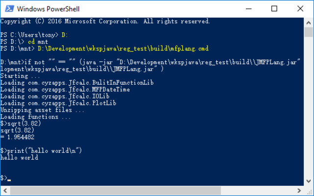
Figure 1.33: Interactive MFP interpreting environment in Windows.
If user only wants to run an mfps script from console, in Windows the command is
Path1/to/mfplang.cmd path2/to/script.mfps param1 param2 …
, in Unix, MacOSX, Linux or cygwin the command is
Path1/to/mfplang.sh path2/to/script.mfps param1 param2 …
, where Path1/to/mfplang.cmd is path to the mfplang.cmd file, pth2/to/script.mfps is path to user’s mfps script file, note that the script file name is not necessarily script.mfps, and param1, param2, … are parameters to run the script if there are any. In order to run an mfps script, user must declare @execution_entry in the file above MFP code but below the shebang line and file help. For example, content of an mfps file is
#!/usr/bin/mfplang
# This is file level help info. It must be located below
# shebang line but above @execution_entry annotation.
@execution_entry ::test_cs::test_f (#, #)
Citingspace ::test_cs
Function test_f(a, b)
Return a + b
Endf
EndCs
. Assume user is using Windows, the file’s name is myscript.mfps and it is located in the current working folder. The AnMath folder is in user’s path searching list. Then user only needs to type
Mfplang.cmd myscript.mfps 3 4
and the result of 7 is shown.
If user is using Unix/Linux/MacOSX/Cygwin, user may manually set a soft link named mfplang in /usr/bin folder linking to the mfplang.sh file. Then user simply types
mfplang myscript.mfps 3 4
and can also get 7.
The usage of @execution_entry will be detailed in the following chapter.
The configuration file of JAVA based Scientific Calculator Plus (whether it is the GUI tool or the interactive MFP interpreting environment) is settings.json. This file is saved in the AnMath folder, same folder as mfplang.cmd and mfplang.sh. If this file does not exist, default settings would be used. A sample settings.json file is shown below:
{
"CHART_FOLDER_PATH":"..\\charts",
"PLOT_EXPRS_VARIABLE_FROM":"-5.0",
"PLOT_EXPRS_VARIABLE_TO":"5.0",
"ADDITIONAL_USER_LIBS":[
{"LIB_PATH":"..\\externlibs\\第一folder"},
{"LIB_PATH":"..\\externlibs\\第三folder\\"},
{"LIB_PATH":"..\\externlibs\\第四folder\\测试文件.mfps"}
],
"SCIENTIFIC_NOTATION_THRESHOLD":"16",
"HISTORICAL_RECORD_LENGTH":"50",
"SCRIPT_FOLDER_PATH":"..\\defaultlib",
"BITS_OF_PRECISION":"7"
}
. User may be interested in the fields of SCRIPT_FOLDER_PATH and ADDITIONAL_USER_LIBS. Before version 1.7.1, all the mfps scripts should be saved in AnMath/scripts folder for JAVA based Scientific Calculator Plus. However, from version 1.7.1, the script lib folder path is configurable and user may include more than one script lib paths. Except the first script lib path, which must be a folder, all other script lib paths can be either a file or a folder. This makes MFP more flexible in PC. Moreover, if a script lib path is not absolute, but relative, e.g. "..\\defaultlib" in the above example, it is relative to the AnMath folder, not to user’s current working folder.
User is not required to manually create or modify the settings.json file. A straightforward way is to open the GUI based Scientific Calculator Plus for JAVA tool, select “tools” menu and “settings” sub-menu, a config dialog box would pop up. See the chart below. The setting entry in the red rectangle is the first lib path, by default it is scripts folder. The blue rectangle includes additional lib paths, every line is a new lib path, which can be either a folder or an mfps file.
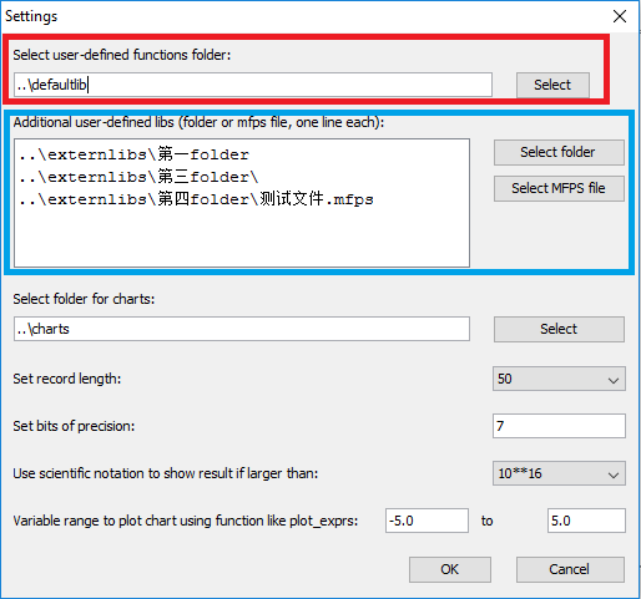
Figure 1.34: Set script lib path(s) for JAVA based Scientific Calculator Plus tool.
Nevertheless, in Android user cannot see the path easily. As such in Scientific Calculator Plus for Android, all the mfps files should be stored in the scripts folder or one of its sub-folders. Otherwise, they will not be loaded at start-up. However, if an mfps script not located in scripts folder includes a correctly defined @execution_entry annotation, it can be executed by long-clicking in the File Manager tool. After it finishes running, its content will be unloaded and in Command Line or Smart Calculator user still cannot see any function defined in this file.
To extend more convenience to user, Scientific Calculator Plus is able to compile and pack an MFP function (whether it is a built-in or a user-defined function) into an independent Android APK installation file. The APK file can be installed, shared with other people or even published in Android app distributing websites like Google play.
Three steps are required to build an APK package. In the first step, user inputs application name, app package id and version. Note that app package id should be 20 characters long and unique. Otherwise, the app cannot be published. User can also select an icon and type help information for the app. If user selects to use default help information, MFP function help will be shown in the app's help page.
In step 2 user sets up function name and parameters to input. Note that the parameters here may not be exactly the same as function parameters. Parameters here are the input that the APK final user should type in. APK creator can set default values for some of the function parameters to save APK final user's input.
The final step is to set APK file name and determine how to sign the apk. If user selects test key, the generated APK file can be installed but cannot be published. User is able to use an existing public key or create his or her own key. All the created keys are stored in AnMath\signkeys folder.
After the above 3 steps finish, a dialog will be shown and ask user to install or share the app or simply exit. If user selects exit, he or she can still access the generated APK file stored in AnMath\apks folder later on.
MFP App Builder is a very useful tool for user with programming background. So after the chapters for MFP programming language, this manual will provide more detailed information about how to build MFP apps. User with strong interest in this field may refer to Chapter 8.
Scientific Calculator Plus provides a complete html format manual. If using version 1.6.6 or earlier, after launching Scientific Calculator Plus, user taps the help ring icon to read manual. Because it is html based, user can tap the hyperlinks to navigate.

Figure 1.35: Scientific Calculator Plus provides various choices to obtain help information.
From version 1.6.7, Scientific Calculator Plus also provides PDF based manual, i.e. this document. By tapping the help ring icon, user sees a dialog box to select reading html manual, reading or sharing PDF manual, or copying sample codes, as shown in the abve chart.
Besides independent manual, the modules in Scientific Calculator Plus have their own help pages. User can start a module, e.g. Smart Calculator or Integral Calculator, tap Android menu key and select help to read help information.
Moreover, quick help key is available in the inputpad of Smart Calculator and Command Line. User taps the key and then inputs a function name, an operator name or an MFP key word, on-line help for the function (or the operator or the MFP keyword) will be shown after tapping the “Start” key.
Scientific Calculator Plus is developed for users with any background, even without much knowledge about programming. This chapter introduces the usage of this app without any programming required.
The emphasis of this chapter is, first, how to use Smart Calculator to calculate, recognize math expression and plot graph; second, how to run function or mfps script in Command Line in Android or any other OSes supporting JAVA; third, how to draw 2D/3D/polar graphs using the independent Chart Plotter; fourth, how to calculate derivative, definite and indefinite integrals; fifth, how to setup input pad. Other parts, e.g. managing MFP script files and building MFP apps, are related to programming. User may skip them if not interested in.
The most attractive capability of Scientific Calculator Plus is drawing 3D charts. This chapter demonstrates user how to draw cylinder, ball, cone and some complicated buildings like Shanghai Oriental Pearl TV tower. User may also try to draw a 3D pyramid using Chart Plotter which is a very good practice to learn this software.